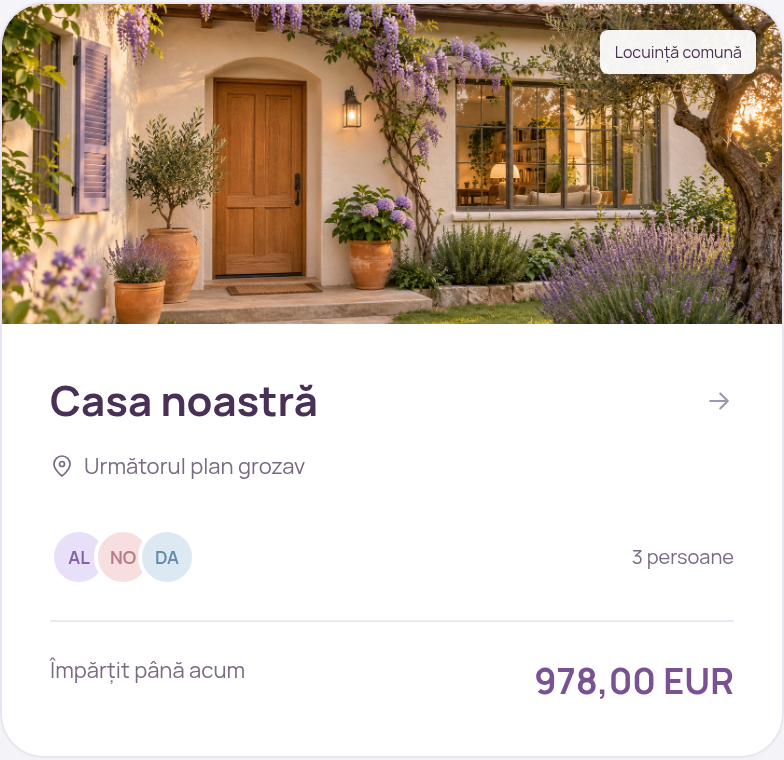
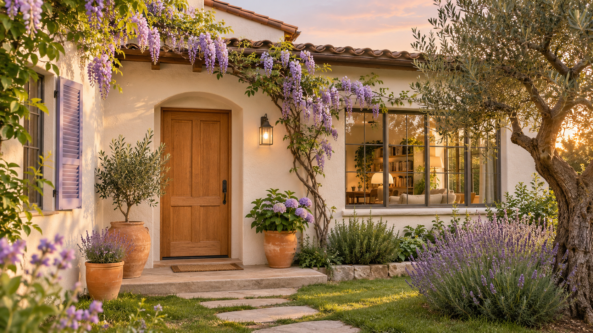

PAGINĂ DE PROBE · IMAGINE GENERATĂ CU AI
O imagine pentru grupul „Casa”
Propunere pentru cardul din Planuri: o casă în lumină caldă, cu accente de lavandă, în locul emoticonului.


Vezi cardul de aproape

Vezi imaginea generată
